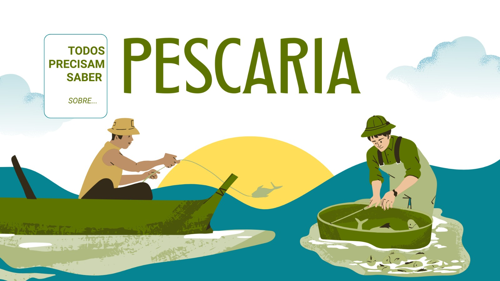

Os melhores profissionais da pesca
Conheça especialistas certificados prontos para planejar cada detalhe da sua jornada.
Veja maisFaça parte da maior comunidade de pesca esportiva do Brasil com guias, locais e dicas exclusivas.
Conheça Nossos Guias
Conte com profissionais, roteiros e informações confiáveis para pescar melhor.
Conheça especialistas certificados prontos para planejar cada detalhe da sua jornada.
Veja maisAcesse roteiros exclusivos, condições climáticas e estrutura de apoio em tempo real.
Veja maisAprenda sobre espécies, hábitos alimentares e melhores iscas para cada temporada.
Veja maisPreserve os ambientes aquáticos praticando a pesca esportiva com responsabilidade.